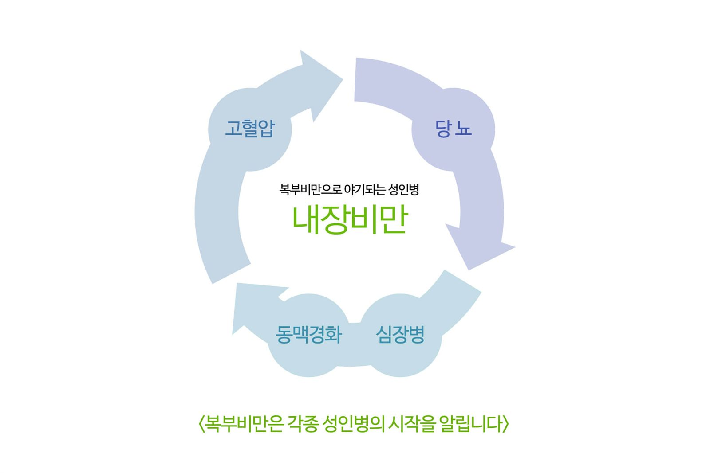

복부비만은 왜 위험한가요?
복부비만은 특히 배 속 장기 사이에 쌓이는 내장지방이 문제입니다. 내장지방은 고혈압, 당뇨병, 고지혈증, 심장 질환, 뇌졸중 같은 성인병과 관련이 깊습니다. 성인뿐 아니라 청소년에게도 늘고 있습니다.

허리둘레 기준(대한비만학회): 남성 90cm, 여성 85cm 이상이면 복부비만으로 봅니다.
복부비만과 함께 오는 증상
원인: 간과 장의 부담
늦은 식사와 과식, 잦은 술자리, 과로와 스트레스가 이어지면 간과 장이 지방과 노폐물을 처리하는 데 부담이 커집니다. 해독한의원에서는 뱃살을 단순히 많이 먹은 결과로만 보지 않고, 간과 장의 기능이 떨어진 상태로 함께 봅니다.
해독한의원에서는 이렇게 치료합니다
- 진찰: 식사 시간과 양, 음주, 배변, 수면, 체성분을 살핍니다.
- 한약: 간과 장의 기능, 몸속 순환을 살피는 처방을 체질에 맞게 합니다. 무리하게 굶기거나 빠르게 빼는 방법은 쓰지 않습니다.
- 침·약침: 소화와 순환을 돕는 치료를 함께 합니다.
- 생활 관리: 식사·운동 계획을 세우고 정기적으로 허리둘레와 체성분을 확인합니다.
한약 다이어트는 체질과 건강 상태를 확인한 뒤 처방합니다. 임신 중이거나 다른 질환으로 약을 먹고 있다면 꼭 미리 알려 주세요.
생활 관리
저녁 일찍
저녁은 잠들기 3~4시간 전에 마치고 야식은 피하세요.
단것·술 줄이기
단 음료와 술은 내장지방을 늘리는 대표적인 원인입니다.
걷기 + 근력
빠르게 걷기와 함께 하체·코어 근력 운동을 하세요.
천천히
한 달에 체중의 몇 % 정도로 천천히 줄여야 다시 찌기 쉽지 않습니다.
자주 묻는 질문
Q. 팔다리는 마른데 배만 나왔어요.
마른 복부비만일 수 있습니다. 체중은 정상이어도 내장지방이 많을 수 있어 허리둘레와 체성분을 함께 확인합니다.
Q. 운동만 하면 뱃살이 빠지나요?
운동만으로는 한계가 있습니다. 식사 시간과 양, 술을 함께 조절해야 합니다.